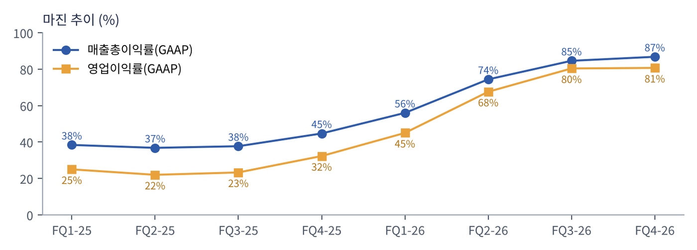

마이크론은 반도체 메모리인 DRAM(컴퓨터가 일하는 동안 데이터를 잠깐 올려두는 작업대)과 NAND(전원이 꺼져도 데이터를 보관하는 창고)를 설계부터 생산까지 직접 하는 미국 유일의 대형 메모리 제조사다. 삼성전자·SK하이닉스와 함께 DRAM 3강 체제를 이룬다.
강점: AI 가속기 옆에 붙는 고대역폭 메모리 HBM(DRAM을 여러 층 쌓아 데이터 통로를 넓힌 메모리)과 1-감마 공정 등 기술 경쟁력, 미국 기업이라는 공급망 지위. 약점: 메모리는 가격이 수요·공급에 따라 크게 출렁이는 대표적 경기순환 산업이고, DRAM 생산의 약 60%가 대만에 몰려 있다.
| 항목 | 내용 |
|---|---|
| 종목 | Micron Technology, Inc. (MU) · 반도체 / 본사 미국 아이다호주 보이시 · 1978년 설립 |
| CEO | 산제이 메로트라 (회장 겸 CEO) |
| 시가총액 / 직원 | $780.7B(약 1,132조 원, 11/6 종가 기준) / 약 6.1만 명 |
| 발행주식 | 11억 3,142만 주 (10-K, 2026.10.2 기준) |
| 최근 분기(FQ4-26) | 매출 $54.23B(+379% YoY), GAAP 순이익 $37.70B, EPS $32.87 |
| 밸류에이션 | TTM PER 11.2배 / FQ1-27 가이던스 EPS×4 기준 선행 PER 약 4.5배 · 배당 분기 $0.15 |
| 다음 실적 발표 | 2026년 12월 23일 전후 예상 (FQ1-27) |
메모리 칩을 만들어 클라우드 업체, 서버·PC·스마트폰 제조사, 자동차 부품사에 판다. 2025년부터 고객군 기준 4개 사업부로 나눠 보고한다.
| 사업부 | 주요 제품·고객 | FQ4-26 매출 | 비중 | 영업이익률 |
|---|---|---|---|---|
| 클라우드 메모리 (CMBU) | 하이퍼스케일러용 HBM, 고용량 서버 DRAM, 데이터센터 SSD | $16.28B | 30% | 76% |
| 코어 데이터센터 (CDBU) | 일반 서버 OEM용 DRAM·SSD, 서버용 LPDDR(SOCAMM) | $18.00B | 33% | 85% |
| 모바일·클라이언트 (MCBU) | 스마트폰 LPDDR, PC용 DRAM·SSD | $13.11B | 24% | 88% |
| 오토·임베디드 (AEBU) | 자동차·산업용·소비자 기기용 메모리 | $6.82B | 13% | 79% |
고객 구조: 데이터센터 두 사업부가 매출의 63%다. 2026년부터는 전략적 고객 계약(SCA)이라는 다년 '테이크 오어 페이'(약속한 물량을 안 가져가도 대금을 내야 하는) 계약을 26건 체결했고, 회사는 이 계약이 2030년까지 매출의 35% 이상을 차지할 것으로 본다.
AI 모델이 커지고 에이전트가 늘수록 GPU 옆에 붙는 메모리가 더 많이, 더 빨리 필요하다. 그런데 메모리 공장(클린룸)은 짓는 데 2~3년이 걸린다. 수요는 지금 폭발하는데 공급은 2028년에나 늘어나는 구조라 가격이 치솟았다.
결국 마이크론의 포지션은 이렇다: AI 인프라 투자가 이어지는 한 메모리는 가장 먼저 동나는 부품이고, 마이크론은 그 가격 상승을 그대로 이익으로 바꾸는 회사다. 반대로 AI 투자 속도가 꺾인다는 신호가 나오면 가장 먼저, 가장 크게 흔들리는 주식이기도 하다. 11월 급락이 바로 그 장면이다.
| 분기 (종료월) | 매출 | QoQ | YoY | 매출총이익률 | 영업이익 | 영업이익률 | 순이익 | EPS | 비GAAP EPS |
|---|---|---|---|---|---|---|---|---|---|
| FQ1-25 (2024.11) | $8.71B | - | - | 38.4% | $2.17B | 25.0% | $1.87B | $1.67 | $1.79 |
| FQ2-25 (2025.2) | $8.05B | -7.5% | - | 36.8% | $1.77B | 22.0% | $1.58B | $1.41 | $1.56 |
| FQ3-25 (2025.5) | $9.30B | +15.5% | - | 37.7% | $2.17B | 23.3% | $1.89B | $1.68 | $1.91 |
| FQ4-25 (2025.8) | $11.32B | +21.7% | - | 44.7% | $3.65B | 32.3% | $3.20B | $2.83 | $3.03 |
| FQ1-26 (2025.11) | $13.64B | +20.6% | +56.7% | 56.0% | $6.14B | 45.0% | $5.24B | $4.60 | $4.78 |
| FQ2-26 (2026.2) | $23.86B | +74.9% | +196% | 74.4% | $16.14B | 67.6% | $13.79B | $12.07 | $12.20 |
| FQ3-26 (2026.5) | $41.46B | +73.7% | +346% | 84.6% | $33.32B | 80.4% | $28.24B | $24.67 | $25.11 |
| FQ4-26 (2026.9) | $54.23B | +30.8% | +379% | 86.8% | $43.75B | 80.7% | $37.70B | $32.87 | $33.42 |
GAAP 기준(비GAAP EPS 별도 표기). 연간: FY25 매출 $37.38B·순이익 $8.54B → FY26 매출 $133.19B·순이익 $84.97B. FQ4-26은 14주짜리 분기(53주 회계연도)다.


| 분기 | 무슨 일이 있었나 |
|---|---|
| FQ1-25 | 매출 $8.71B. 클라우드(CMBU)·데이터센터(CDBU)가 이익을 내는 동안 모바일·자동차는 영업이익률 15%·7%로 부진. 'AI만 좋은' 양극화 구간. |
| FQ2-25 | 2년 중 유일한 역성장(-7.5%). 모바일 재고 조정으로 MCBU 영업이익률 1%까지 하락. 이 분기가 사이클의 바닥이었다. |
| FQ3-25 | +15.5%로 반등. 모바일 매출이 $3.26B로 회복했지만 CDBU는 $1.53B로 오히려 줄어 제품 전환기 흔적. |
| FQ4-25 | 매출 $11.32B, 매출총이익률 44.7%로 7%p 점프. 메모리 가격 상승이 손익에 찍히기 시작. FY25 순설비투자 $13.80B. |
| FQ1-26 | 매출 $13.64B(+57% YoY), 영업이익률 45%. 모든 사업부 이익률 개선. 배당 $0.115 유지. |
| FQ2-26 | 폭발의 시작: 매출 +75% QoQ로 가이던스 $18.7B를 27.6% 초과. 모바일 영업이익률 47% → 76%. 배당 $0.15로 인상. 설비투자 계획 $25B+로 상향. |
| FQ3-26 | 매출 $41.46B, 매출총이익률 84.6%. 첫 SCA 16건 체결 발표, HBM4 대량 출하. 분기 영업현금흐름 $25.39B. |
| FQ4-26 | 매출 $54.23B, 영업이익률 80.7% 사상 최고. CDBU가 $18.00B로 최대 사업부로 부상. SCA 26건으로 확대. 다만 영업비용이 $1.74B → $3.30B로 거의 2배. |

| 사업부 영업이익률 | FQ1-25 | FQ2-25 | FQ3-25 | FQ4-25 | FQ1-26 | FQ2-26 | FQ3-26 | FQ4-26 |
|---|---|---|---|---|---|---|---|---|
| 클라우드 메모리 | 40% | 45% | 46% | 48% | 55% | 66% | 78% | 76% |
| 코어 데이터센터 | 38% | 33% | 20% | 25% | 37% | 67% | 83% | 85% |
| 모바일·클라이언트 | 15% | 1% | 15% | 29% | 47% | 76% | 86% | 88% |
| 오토·임베디드 | 7% | 6% | 11% | 20% | 36% | 62% | 75% | 79% |
눈여겨볼 점은 클라우드 메모리(HBM 중심) 이익률이 FQ3-26 78% → FQ4-26 76%로 처음 꺾였다는 것이다. HBM은 장기 계약 가격이라 범용 메모리 현물가 급등을 늦게 따라간다. 반면 범용 비중이 큰 모바일·데이터센터가 88%·85%로 더 높아졌다. 지금 이익의 상당 부분이 '가격'에서 나오고 있다는 뜻이다.

| 현금흐름 | FQ1-25 | FQ2-25 | FQ3-25 | FQ4-25 | FQ1-26 | FQ2-26 | FQ3-26 | FQ4-26 |
|---|---|---|---|---|---|---|---|---|
| 영업현금흐름 | $3.24B | $3.94B | $4.61B | $5.73B | $8.41B | $11.90B | $25.39B | $43.97B |
| 순 설비투자 | $3.13B | $3.09B | $2.66B | $4.93B | $4.50B | $5.00B | $7.10B | $10.77B |
| 조정 FCF | $0.11B | $0.86B | $1.95B | $0.80B | $3.90B | $6.90B | $18.30B | $33.20B |
기말 현금·유가증권: FQ1-26 $12.0B → FQ2-26 $16.7B → FQ3-26 $30.2B → FY26 말 $73.48B.
| 분기 | 매출 가이던스(중간값) | 실제 매출 | 초과율 | 비GAAP EPS 가이던스 | 실제 |
|---|---|---|---|---|---|
| FQ2-26 | $18.70B | $23.86B | +27.6% | $8.42 | $12.20 |
| FQ3-26 | $33.50B | $41.46B | +23.8% | $19.15 | $25.11 |
| FQ4-26 | $50.00B | $54.23B | +8.5% | $31.00 | $33.42 |
| FQ1-27 | $61.5B ± $1.5B | 12월 발표 | - | $38.15 ± $1.00 | 컨센서스 $38.23 |
| 구분 | 이슈 | 내용 / 회사 입장 의미 | 영향 |
|---|---|---|---|
| 기업 | SCA 26건, 2030년 매출 35%+ 커버 | 사실: 테이크 오어 페이 + 가격 하한·상한 + 현금 예치금 구조. 의미: 다음 다운사이클의 바닥을 계약으로 깔아둔 것. 단, 상한 조항 때문에 추가 가격 급등분은 일부만 반영된다. | 호재 |
| 기업 | 대만 타오위안 신규 팹 공사 대부분 중단 보도 (11/5) | 사실: 약 $4.5B 규모 HBM·DRAM 팹이 현지 노조와의 성과급·임금 갈등으로 멈췄다는 보도. 의미: 2028년 공급 계획 지연 가능성. DRAM 생산의 약 60%가 대만이라 노무 리스크가 부각됐다. | 악재 |
| 기업 | 12월 9일부터 자사주 매입 확대 가능성 | 사실: CHIPS법 보조금에 따른 자사주 매입 제한이 12월 9일 풀린다는 보도. 의미: 현금 $73B를 가진 회사의 매수 여력이 주가 하단을 받칠 수 있다. | 호재 |
| 산업 | 11/4~5 AI 인프라주 급락 | 사실: 11/5 나스닥 약 -4%, MU -17.5%(1년 내 최대 일간 낙폭), AMD -13%, 엔비디아 -7%. 중간선거 결과로 데이터센터 건설 규제·AI 투자 둔화 우려가 커졌다. 의미: 실적이 아니라 '향후 투자 속도'에 대한 공포. 메모리는 사이클 민감도가 가장 커서 가장 크게 빠졌다. | 단기 악재 |
| 산업 | FY27~28 공급 타이트 전망 | 사실: CEO는 클린룸 증설에 시간이 걸려 2028년에도 공급 부족이 이어질 것으로 봤다. 의미: 수요가 꺾이지 않는다면 가격 강세가 2년 더 이어질 수 있다. | 중기 호재 |
트레이딩뷰에서 MU 일봉 516개(2024.10 ~ 2026.11.6)와 주봉 108개를 직접 추출해 계산했다. 결론부터 말하면 장기 추세는 아직 살아 있지만 단기·중기 추세는 무너졌고, 지금은 장기 추세의 마지막 방어선을 시험하는 자리다.


위: 주봉 재구성 차트(10·20·40주선, 피보나치는 2026.3월 저점 $311 → 6월 고점 $1,255 기준). 아래: 트레이딩뷰 일봉 캡처(작도 없음, SMA 5·20·50·100·200 + 볼린저 밴드).
| 이동평균 | 값 | 종가 대비 | 해석 |
|---|---|---|---|
| 5일선 | $766 | -9.9% | 단기 하락 가속 |
| 20일선 | $879 | -21.5% | 20일선이 50일선 아래로 → 단기 데드크로스 |
| 50일선 | $962 | -28.2% | 9~10월 박스권 중심, 강한 저항 |
| 100일선 | $959 | -28.1% | 50일선과 겹쳐 $960 부근이 두꺼운 저항대 |
| 200일선 | $757 | -8.8% | 11/4 이탈. 2025년 9월 이후 처음으로 200일선 아래 마감 |
| 50주선(트레이딩뷰) | $675 | +2.2% | 장기 추세의 마지막 방어선. 11/5 저점 $650이 이 선을 잠깐 뚫었다가 회복 |
배열은 50일 > 100일 > 20일 > 200일 > 주가로 엉켜 있다. 정배열이 깨지고 역배열로 넘어가는 초입이다. 50일선($962)이 아직 200일선($757) 위라 '골든크로스 상태'는 유지되고 있지만, 50일선이 꺾이기 시작해 이 간격은 빠르게 줄어들 것이다.
CTA(추세추종 펀드)는 사람의 판단 대신 '가격이 오르는 쪽에 올라탄다'는 규칙으로 매매한다. 대표적인 규칙들(이평선 필터, 이평선 교차, 돌파, 기간별 모멘텀)을 MU에 그대로 적용해 봤다.
| 규칙 | 기준 | 현재 값 | 신호 |
|---|---|---|---|
| 장기 추세 필터 | 종가 vs 200일선 | $690 < $757 | 매도 |
| 중장기 교차 | 50일선 vs 200일선 | $962 > $757 | 매수(약화) |
| 단기 교차 | 20일선 vs 50일선 | $879 < $962 | 매도 |
| 돈키언 채널 돌파 | 55일 최저가 경신 | 11/5 $650 신저점 | 매도 |
| 1개월 모멘텀 | 21거래일 수익률 | -33.4% | 매도 |
| 3개월 모멘텀 | 63거래일 수익률 | -19.9% | 매도 |
| 6개월 모멘텀 | 126거래일 수익률 | -7.6% | 매도 |
| 12개월 모멘텀 | 252거래일 수익률 | +190.5% | 매수 |
| 종합 (매수 +1 / 매도 -1, 8개 평균) | -0.50 | 숏 편향 | |
해석: 단기·중기 모델을 쓰는 CTA는 이미 롱을 정리했거나 숏으로 돌아섰을 가능성이 높다. 12개월 모멘텀만 남은 장기 모델이 롱을 들고 있다. 여기에 60일 변동성이 연 69%(ATR 20일 $57.6, 주가의 약 8%)까지 커져, 변동성에 맞춰 포지션을 줄이는 CTA 특성상 추가 매도 물량이 나올 수 있다. 반대로 이미 포지션이 많이 가벼워진 만큼 '기계적 매도'의 대부분은 지나갔다고 볼 수도 있다. 11/5 거래량 7,800만 주(평소의 2.6배)는 투매(capitulation) 성격도 있다.
| 전환 가격 | 무엇이 바뀌나 | 의미 |
|---|---|---|
| $747 ~ 757 | 6개월 모멘텀 플러스 전환 + 200일선 회복 | 첫 번째 추세 복귀 신호. 종가로 2일 이상 지키면 장기 모델 매도 압력 해소 |
| $861 ~ 879 | 3개월 모멘텀 플러스 전환 + 20일선 회복 | 중기 모델 재진입. 10월 박스 하단($849~858)과도 겹침 |
| $960 ~ 1,036 | 50·100일선 회복, 1개월 모멘텀 플러스 전환 | 단기 모델까지 롱 전환 = 추세 완전 복귀 |
| $675 / $650 이탈 | 50주선 이탈 + 55일 신저점 재경신 | 장기 추세 모델까지 흔들림. 추가 기계적 매도 가능 |
모멘텀 기준 가격은 날마다 바뀐다(예: 6개월 전 종가가 바뀌면 전환선도 이동). 11/6 기준 계산값이다.
| 구분 | 가격대 | 근거 |
|---|---|---|
| 저항 3 | $960 | 50·100일선 밀집, 9~10월 박스 중심 |
| 저항 2 | $849 ~ 894 | 10월 박스 하단(10/22 저점 $849), 20일선 $879, 피보나치 38.2% $894 |
| 저항 1 | $757 ~ 795 | 200일선 $757, 피보나치 50% $783, 11/4 종가 $795(급락 시작점) |
| 지지 1 | $650 ~ 675 | 11/5 장중 저점 $650, 2026년 5월 주봉 저점 $652, 피보나치 61.8% $672, 50주선 $675 — 네 가지가 겹치는 핵심 지지 |
| 지지 2 | $546 ~ 600 | 2026년 5월 첫 주 갭($546→$558) 미메움 구간, $600 심리선 |
| 지지 3 | $513 | 피보나치 78.6%. 여기까지 밀리면 상승 추세 자체가 훼손 |
기본 판단: 실적 발표(12/23 전후)까지 $650~800 박스에서 바닥 다지기 가능성이 가장 높다. 펀더멘털은 선행 PER 약 4.5배로 싸지만, 메모리 주식은 원래 실적 정점 근처에서 PER이 가장 낮다. 시장이 지금 묻는 질문은 "이익이 얼마냐"가 아니라 "이 이익이 2027년에도 유지되냐"이고, 그 답은 다음 실적과 AI 투자 뉴스에서 나온다.
시나리오 폐기 조건: 주봉 종가가 $650 아래에서 마감하면 '눌림목' 시나리오를 버리고 하락 추세로 전환한다.
| 가격대 | 시나리오 | 대응 |
|---|---|---|
| $960 이상 | 추세 완전 복귀 | 잔여 20% 추세 추종, 손절 $879로 상향 |
| $861 ~ 879 | 중기 모델 재진입 | 2차 익절(40%) |
| $757 ~ 795 | 장기 추세 복귀 확인 | 2차 진입 또는 1차 익절(40%) |
| $650 ~ 675 | 핵심 지지 시험 | 종가 지지 확인 후 소량 분할 진입 |
| $620 이하 종가 | 지지 실패 | 손절, 관망 전환 |
| $546 ~ 600 / $513 | 하락 추세 | 신규 매수 보류, 실적 확인 후 재평가 |
정리하면 "실적은 최고인데 왜 주가는 45% 빠졌나"가 지금 마이크론의 질문이다. 메모리 주식은 실적이 아니라 실적의 2차 미분(성장의 가속·감속)에 반응한다. 가이던스 초과율이 28% → 24% → 9%로 줄었고, HBM 이익률이 처음 꺾였다. 시장은 이것을 '정점 신호'로 읽기 시작했다. 반대로 12월 실적에서 초과율이 다시 커지면 지금 가격은 사이클 중간의 깊은 눌림으로 기록될 것이다. 좋은 회사를 고르는 것과 좋은 가격에 사는 것은 다른 문제이며, 지금은 후자를 기다릴 때다.
출처: Micron IR 분기 실적 발표문(FQ1-25 ~ FQ4-26, investors.micron.com), Micron 10-K(2026.10.9), TradingView MU 차트·기술적 지표(2026.11.06 종가), Trefis·Kalkine·Benzinga·The Stack·Phillip Securities·Gotrade 보도(11월 급락 원인, SCA, 자사주 매입). 이 자료는 개인 학습용 분석이며 특정 종목의 매수·매도를 권유하지 않습니다. 가격대는 11월 6일 종가 기준 계산값입니다. 모든 투자의 책임은 개인에게 있습니다.